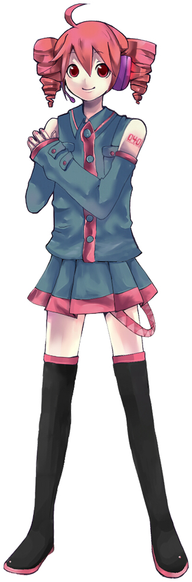
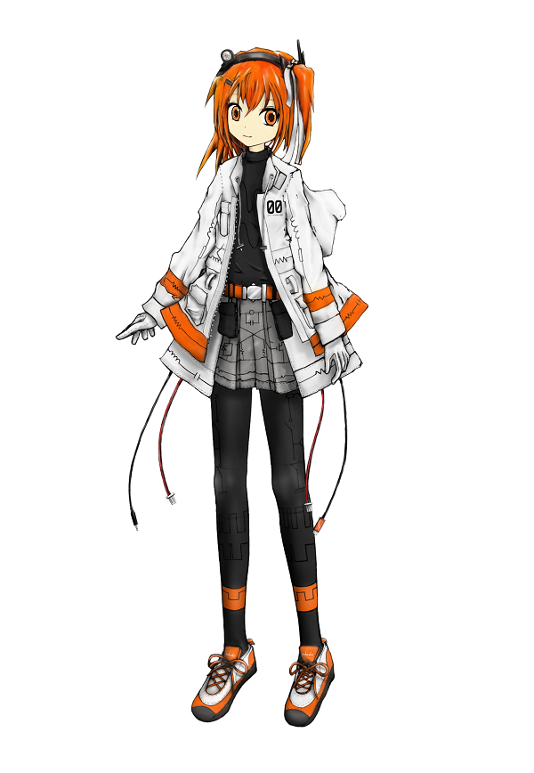

UTAUシリーズ
飴屋プロジェクト
- 
-
重音テト
苗字の読み方は「かさね」．決して「じゅうおん」ではない．
匿名掲示板2ちゃんねるにて，エイプリルフールのジョークで制作された架空のボーカロイドが，重音テトである．
赤褐色の髪をドリルのようなツインテール（通称，ツインドリル）にまとめている．
フロクロさんの重音テト曲が大好き．
- 
-
足立レイ
ボイスサンプル提供者，すなわち基となった声が存在しない100%人工の合成音声．
オレンジの瞳と髪が特徴的．
制作者は声から身体まですべてを一人で制作している．
アボガロ6さんの足立レイ関連の動画は一見の価値あり．